Week Six
Group Project and MongoDB
On Weeks 6 we worked on a collaborative
project and learned about mongoDB
Our lessons were as follows:
- Monday - Group Project Start
- Tuesday - Coding Paradigms
- procedural - group instructions into procedures
- object-oriented - groups instructions with the part of the state they operate on
- classic languages include: Pascal, C, Basic
- can group a set of lines into a procedure (a function)
- any program that has a start and end is procedural
- flow of the program is controlled by events
- a main loop that wait for an event then handles the events
- events could be a button, a key or tripping an alarm, anything that can give a signal to trigger an event
- programs are built from a number of related objects
- classes are coded elements that contain attributes and have behaviours
- Classes,0bjects represent things like a person, a bank account or a ball
- objects can work together if some of the data and methods fit
- objects are created from a template(a class)
- new classes can be created by altering or adding to old classes
- Wednesday - Group Project Work
- Thursday - MongoDB
- Users
- Front End UX
- Web Interfaces
- Server Applications
- Database
- Does not rquire a fixed schema
- Can dynamically add fields
- Scales horizontally, documents can stretch which lets it handle large amounts of data without significant performance decrease
- Can continue to operate in the event of hardware failures
- NoSQL has a fast read write speed, especially with large data sets
- NoSQL can be cheaper to set up and maintain
- Open source
- Uses JSON like documents
- Highly scaleable
- No pre-defined schemas
- Tables and data structures are mutable
- Can run on a single server or be distributed
- Database - similar to an SQL database but more flexible
- Collection - equivalent to a table however it's size is mutable
- Document - the same as a row but can contain nested arrays or sub-documents
- Data is stored in key value pairs
- Data is seperated by commas
- Curly braces hold objects
- Square brackets hold arrays
- use databasename // selects the database to use
- db.createCollection("collectionname") // creates a collection
- db.collectionname.find() // shows all records in a collection
- db.collectionname.find( {Id: "_0123"} ) // shows all records that match the collection
- db.collectionname.insertOne({key: value, name: "dave"}) //inserts a single record
- db.collectionname.insertMany([{document1},{document2}]) // inserts multiplee records
- db.collectionname.deleteOne({condition}) // deletes the first record that matches the condition
- db.collectionname.deleteAll({condition}) // deletes all records that match the condition
- db.collectionname.updateOne({condition}, {$set: {fieldname: newvalue}}) // updates a value in one record
- db.collectionname.updateMany({condition}, {$set: {fieldname: newvalue}}) // updates multiple records
- db.collectionname.replaceOne({condition}, {new record}) // replaces a record with a new one
- Friday - Project Presentation
We did the planning for our group project which will be submitted friday where I will go into more detail
On tuesday we looked at coding paradigms which are different styles of programming languages, 3 of which are:
Procedural
Event Driven
Object Oriented

A lot of programming languages work extremely similarly however they use different syntax, almost all programming languages use at least one of the paradigms I have mentioned in this day's notes
On wednesday we spent the whole day working on our group projects, I will go into more detail of our group project on friday
On thursday we covered a lot so this is going to be a long one
First we had a brief mention of the stack which goes in the order:
NoSQL
NoSQL stands for Not Only SQL, NoSQL is a more flexible version of SQL that has the following key properties:
An example of a NoSQL database management tool would be MongoDB
MongoDB
The key features around MongoDB are:
MongoDB doesn't use the same words as SQL, the 3 parts of storing data are:
Before we move onto how to use MongoDB, a quick explanation of the syntax they use. MongoDBShell uses JSON which stands for JavaScript Object Notation, the things you need to know to use it are:
Now we can get into how to use MongoDB, first you will need to load up MongoDB compass and MongoDBShell, on compass, copy the url string that it gives you, it should be similar to "mongodb://localhost:27017" and then click connect
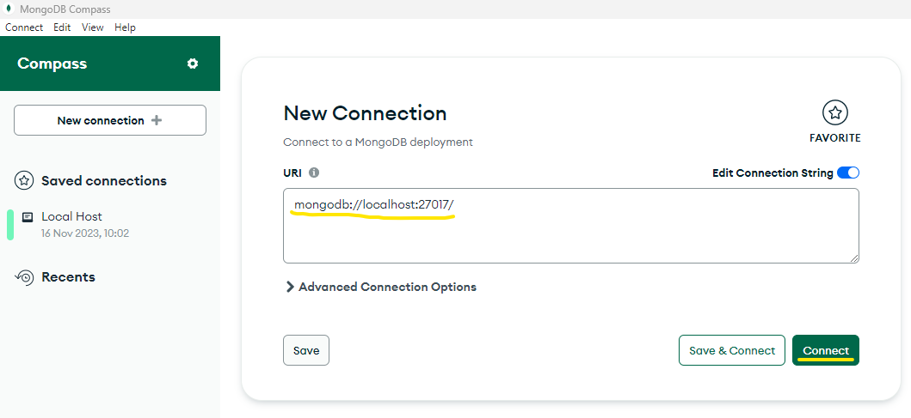From here we want to now go to MongoDBShell and type in the url we coppied earlier and hit enter, this will connect the shell to the compass and allow you to use MongoDBShell commands
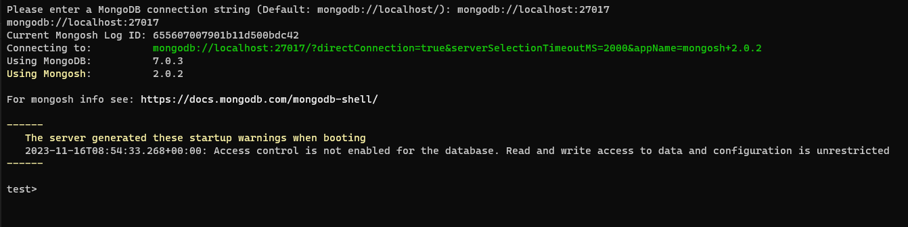Once you are connected to your Compass you will need to create a database in compass so that you can use it to make collections and start setting up a proper database, to do this you click the + icon next to databases and fill in the required information, once you've done that you can go back to MongoDBShell
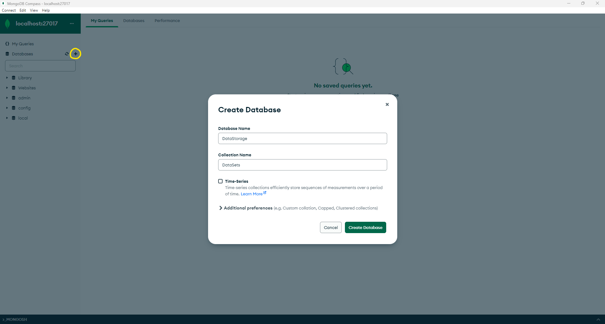Once you are back in shell you will need to type in "use databaseName" where database name is the name of the database you created, from here you can use the commands in the following list to insert, edit, delete and querry data. (// and after are a description of the command)
Setup and querry
Insert
Delete
Update/Replace
On friday morning we presented our project which was a small turn based combat game with a puzzle at the end, The first thing we did was make a user flow so that we could get a general plan in mind for what it was going to look like and how it was going to function
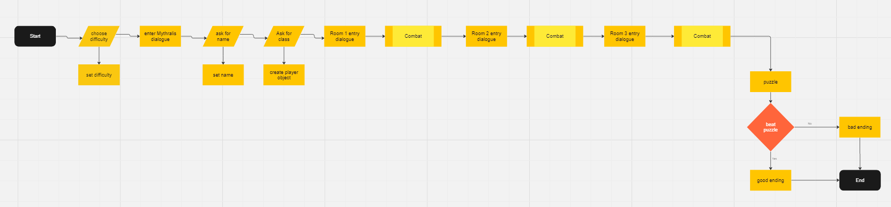 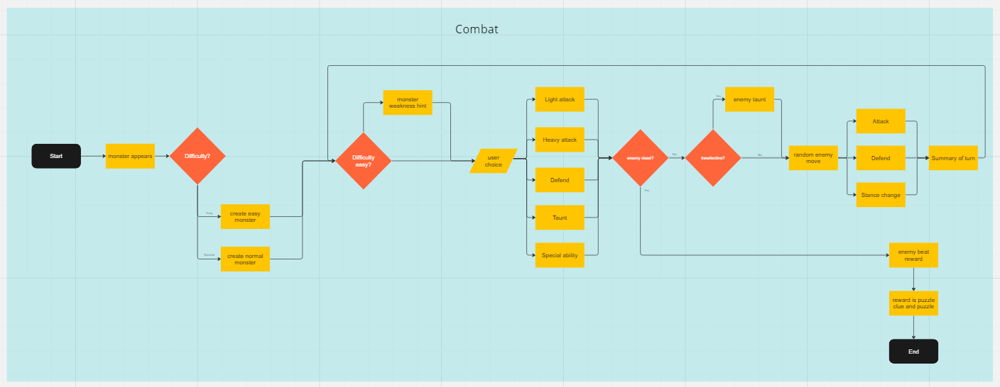We also set up a miro board to show what needed to be done, what people where doing and what was already done. We also put what was essential and what was a could have on the board as well
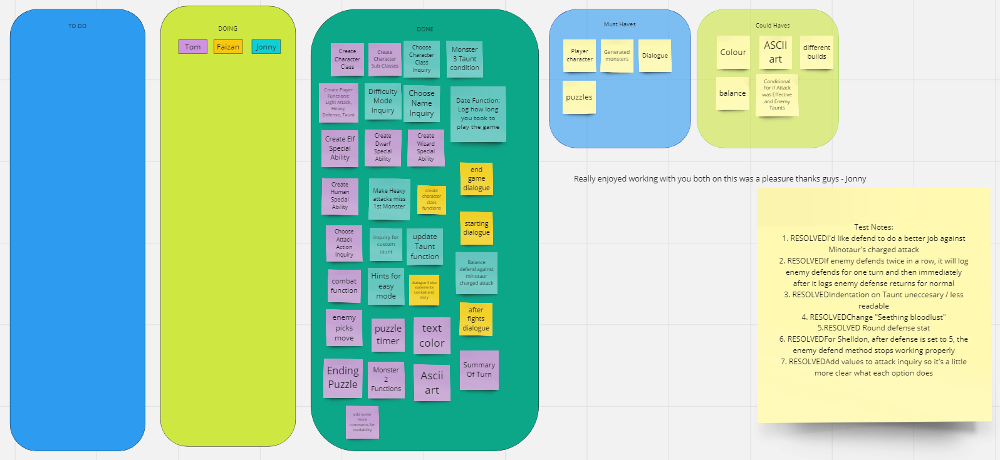After planning was done we got stuck into the code where we set up some basic things like the classes that we were going to use as well as the properties they would have so that we could referance them elsewhere, we also set up different files for each bit of code so that nothing got cluttered or overlapped
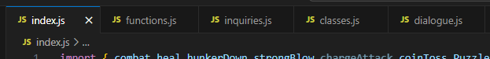 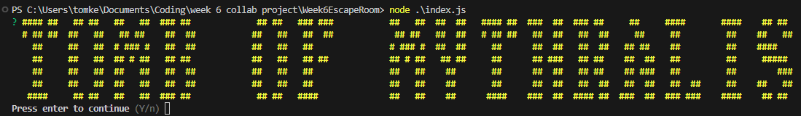The first class we made was the character class that enemy and player extend off which had the base properties of: health, attack, defence and name which were the properties that were going to be used everywhere and by all created objects
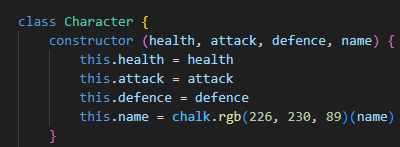I'm not going to go too in depth into the code but the combat system basically used a while loop that would advance the "turn" on each iteration and would do so until the player or enemy health went below 0, this worked alongside a queue array that would activate certain functions based on the turn number passed in if the current turn and the turn in the queue so it would take the name and object passed in with the turn number and do an action to the object based on the name passed in
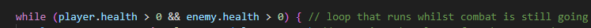 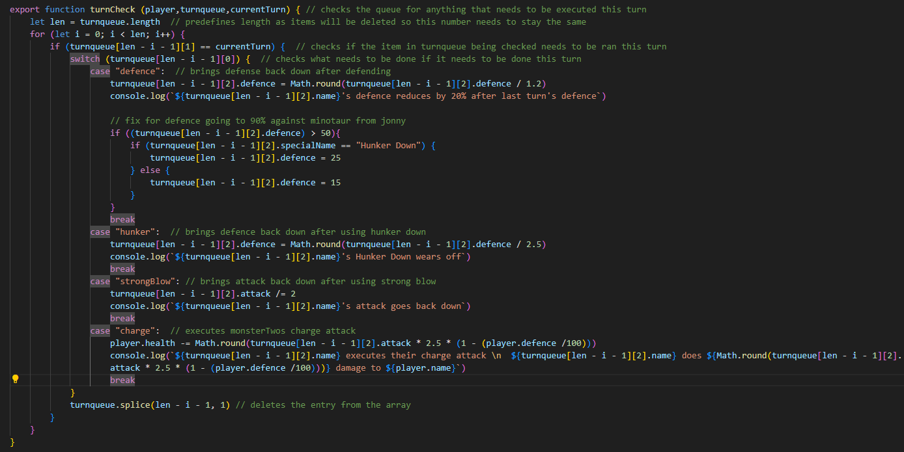The combat would start with taking the players input, running a function based on that input and then doing a random enemy move based on the enemy, and then doing any functions that are set to activate on this turn from the queue, this loop would repeat until either the player or the enemy are dead
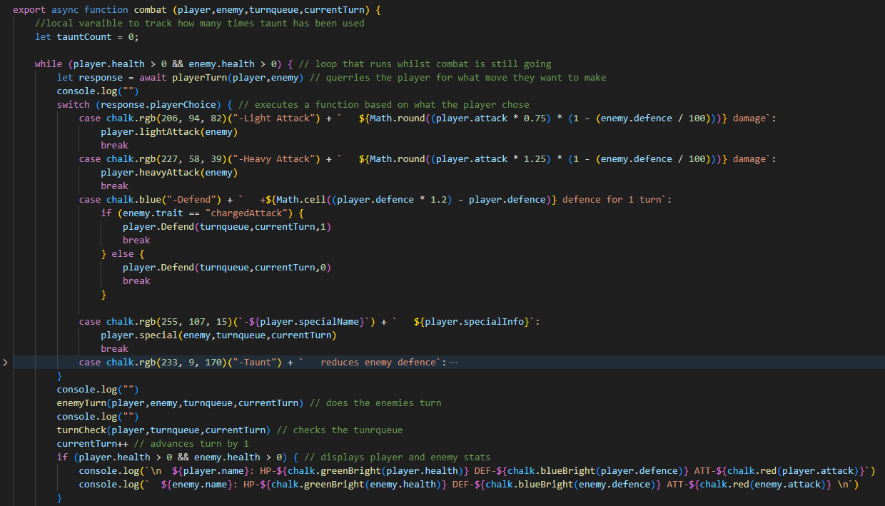 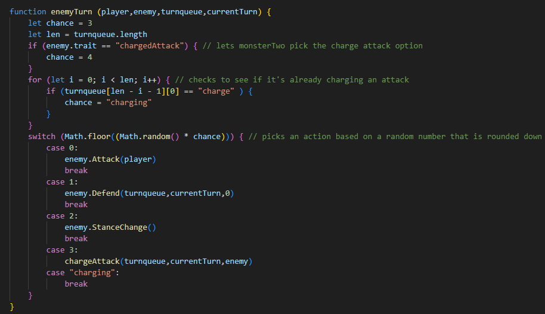 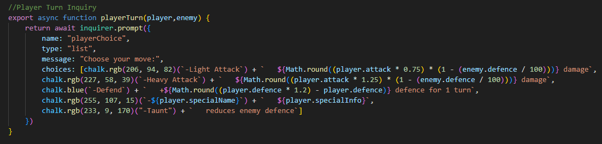 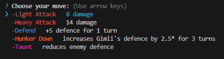 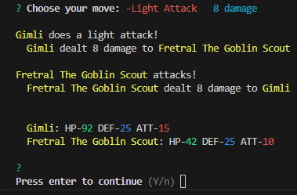The final functions were a maze puzzle that would display only 2 spots away from the player so they had limited visibility, this was done using a 2D array where each eelement was considered a coordinate and used to check for what was on each space, this worked great and gave a nice finish to the project, getting out showed you a bit of victory dialogue and how long it took you to get out
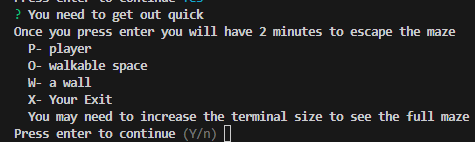 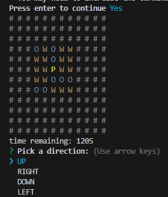For this project we used github which allowed us to collaboratively work on the same piece of code, splitting up the files also helped avoid merge conflicts as we wouldn't be working on the same file most of the time, we used plenty of branches to avoid having to do constant conflict resolutions and we decided to complete a feature and then merge it in and deal with conflicts once a feature was complate rather than every commit
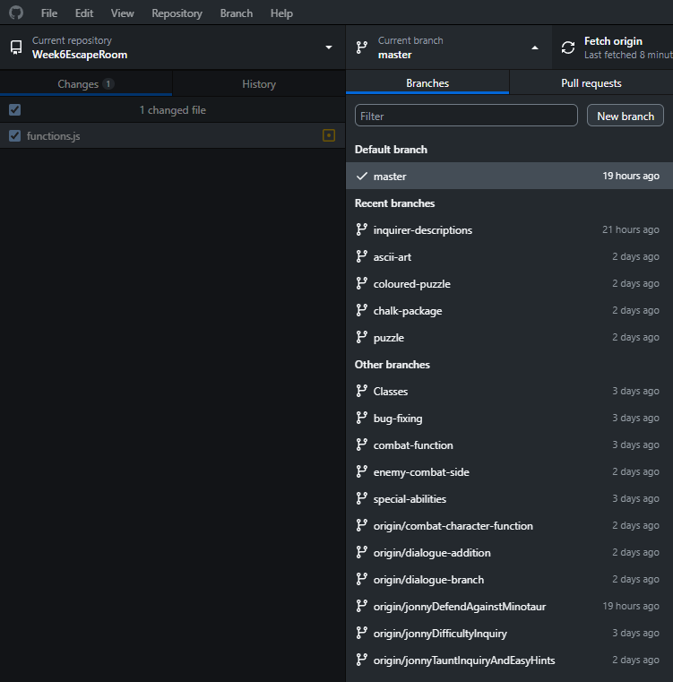There's plenty more I could go into but this is starting to get really long, if you want to check out the code which has comments for readability you can find it here, if you want to run it, just type into the console "node ./index.js" in your coding IDE